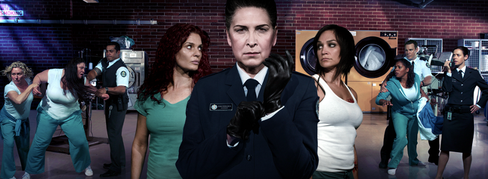

Wentworth Prison: The Queen and The Freak
Published: 20th November 2014
Season 2 of Wentworth Prison was aired in the United Kingdom on September 3rd, 2014 on Channel 5 at 10pm. Following the explosive finale of Season 1, Erica Davidson was sacked, Bea Smith has been sedated and was given a 12 year sentence for the manslaughter of Jacs Holt.

Season 2 mainly focused on Bea Smith revenging the death of her daughter Debbie. Bea Smith has been very interesting to watch from the start, especially as I’d not watched Prisoner: Cell Block H. Her character has changed so much since the first episode of season 1, she has adapted to prison life like a duck to water some may say. Her mission to say sane in Prison was to ‘kill the fucka’, referring to Brayden Holt.
This season saw the introduction to the new Governor Joan Ferguson, known now as The Freak. She is, as Fletch puts it, a psychopath but one that is so intriguing to watch. Exploring into her past her true intentions towards Will finally became apparent.
Vera has changed quite a lot since season 1 and mainly that change came after her mother had passed away. Vera, also known as Vinegar Tits, has now become a mini-Ferguson, although I am not convinced it’s for the better. I did feel sorry for her in episode 7 though.
At the start of season 2 Franky was Top Dog but by the end of the season the support of the women was lost. She couldn’t even get Boomer to get a crew together to teach Maxine a lesson. Franky keeping her Top Dog title is looking very slim. Episode 8 Sins of a Mother was by far the best episode that focused on Franky and her vulnerabilities. Ferguson really played with her head and after many violent attacks, Liz came forward as the informer but Franky didn’t react in the way we were all expecting. Liz should be worried if she ever returned to Wentworth. In terms of Franky's character I preferred her in season 1.
Jess Warner came into Wentworth part way through season 2 and I still don’t get her intentions. At the moment I wouldn’t trust her and the evil stare that she gave Doreen when she was shouting to Nash in episode 12 was kind of creepy! Hopefully, we will find out her true intentions in season 3.
All the characters in Wentworth Prison had something about them that made people fall in love with them and no one was left behind as a weak link.
Episode 11 was my favourite episode of the season. This episode attracted 665k viewers. It was jam-packed with drama from loads of different characters. The reason it is my favourite episode was because it tied all the other episodes together and brought Bea Smith’s plan to life.
Jess manipulated Fletch so that Bea was able to get the swipe card from his belt and access the mail room to equip herself with a weapon. Fletch in this episode went completely bonkers which was funny but at the same time really hard to watch.
The fight scene between Bea and Franky was fantastic and brutal, which is what we’d all expect from a prison drama. Franky lost the fight and Bea slit her wrists all in aid of her plan to escape. At the end of the episode, we saw Bea Smith walking off into the night and Ferguson finally realising she had been played by the very clever Bea Smith.
The finale of Wentworth Prison pulled in an audience of on average 600k viewers. This episode was a superb finale which contained some unexpected twists along the way.
The opening scene of episode 12 was very heart-warming as Bea had slept the night by Debbie’s grave. However, this scene was short-lived as it was time for Bea to retrieve her package from Liz.
As you can imagine Liz wasn’t very happy to see Bea, nor about the package that Bea had sent to her. Personally, I would have wanted to know how she escaped but I think Liz was more bothered about stopping Bea doing something stupid.
The truth about Ferguson was finally brought to light by Fletch but he was swiftly run over by a white van in a "what the hell just happened" scene.
Ferguson put her own plan into place with the help of Vera who agreed with the lie about Will being involved with Bea. Very disappointed with you Vera!
In the final scenes of episode 12, Brayden was shot by Bea but not before a lot of crying for Mr Holt himself. It maybe wasn’t such a good idea to give her that creepy smirk and both Bea and Will were arrested.
Bea made her way back to Wentworth Prison. The Governor’s new nickname was born, The Freak and Franky announced Bea Smith as Tog Dog. Queen Bea is officially born!
For those that don’t know why Bea Smith called Joan Ferguson ‘Freak’, Danielle Cormack (the actress that plays her) tweeted saying it was because Ferguson put her back in H2 with Franky instead of putting her in the slot.
Like most dramas we were left with many un-answered questions and many fans wanting more. So what really happened to Fletch? Is Will really going to be charged and sent to prison? Is Liz heading back to Wentworth? And what is Franky, Bea and The Freaks next move?
Overall, season 2 of Wentworth Prison was thrilling from the start and topped season 1 by a long shot. With unexpected twists and brilliantly written storylines. My hat goes off to all the writers, cast and crew that are involved in making Wentworth Prison and I for one cannot wait for season 3 where the battle begins between The Queen and The Freak.